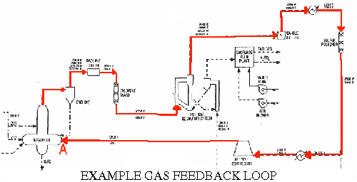
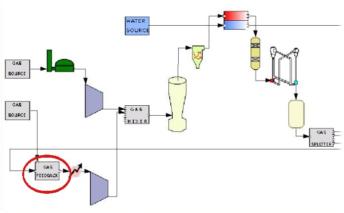
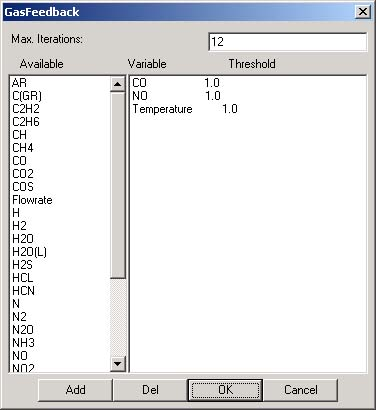

|
The Gas Feedback Module facilitates feedback loops like the one shown on the right where inlets to a given module are dependent on the same module's outlets. The Gas Feedback Module executes a series of iterations until properties of the cycling gas between sequencial iterations fall within certain user-specified parameters. Parameters within the User Interface (see below) include: temperature, pressure, flowrate, composition, and a maximum number of allowable iterations. |
 |
|  | The Gas Feedback module is always coupled with a GasSource Module that serves as a "first guess" of the properties of the gas at the feedback inlet (site "A" above). A simplified model of the above schematic would look like the network shown on the left. |

|  |
This User Interface allows the user to specify the desired accuracy and computational method of a gas feedback loop. The Max. Iterations box gives the total number of iterations allowed in the case that the specifications listed below are not met. The lower list allows the user to define a set of conditions that, if met, end iterations and signify an achieved suitable outcome. Example: The loop defined by the specifications shown at left will cycle until the change in CO level between iterations is less than 1%, the change in NO levels is less than 1%, and the change in temperature is less than 1%, or until the number of iterations reaches 12. Once one of those two condition sets is reached, the module network ends the loop and will continue using the gas properties from the most recent iteration. |